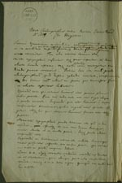
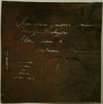
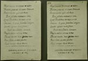
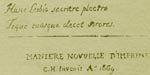
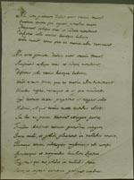
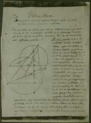

Christiaan Huygens. Facetten van een genie
De manuscripten
8 april 31 mei 2004
Tentoonstelling in de Universiteitsbibliotheek Leiden
4. Een nieuwe druktechniek (1669)
Deze papieren lijken op het eerste gezicht reproducties afkomstig uit de jaren zestig: slechte xeroxkopieën van originele manuscripten en tekeningen. In werkelijkheid zijn het driehonderd jaar oudere druksels, door Huygens vervaardigd via een zelf uitgevonden procédé dat hij aanduidt als ‘Maniere nouvelle d’imprimer’ of ook ‘Maniere nouvelle de graver à l’eau forte’. Een dunne koperplaat wordt geprepareerd met etsgrond, waarin met een dunne naald wordt geschreven of getekend. De plaat blijft ondergedompeld in etswater totdat het zuur op de plaatsen waar de beschermende etsgrond is weggenomen volledig door het metaal is gevreten. In een volgende fase wordt inkt door het zo ontstane sjabloon heen op papier gedrukt. Dit doordrukprocédé heeft ten opzichte van diepdruk één groot voordeel: men hoeft geschreven tekst en complexe tekeningen niet in spiegelbeeld aan te brengen in de etsgrond.
|  | 4.1. ‘Nova Chalcographiae ratio. Inventa
Lutetiae Parisiorum A˚ 1669 a Chr. Hugenii’. Manuscript. [HUG
32, f. 168] –– Huygens beschrijft de vervaardiging van het sjabloon uit een koperen etsplaatje en het doordrukprocédé. |
|  | 4.2. Tot sjabloon geëtst koperplaatje, met
incipit van Lucretius’ De natura rerum (“Aeneidum
genitrix hominum divumque voluptas ...”) en tekening van twee
cirkels. [HUG 32] –– Bij het hanteren van de naald dient men letters als a en o, en ook cirkels niet volledig te sluiten, omdat ze anders na het etsen uit het metaal zouden vallen. |
|  | 4.3. Drie afdrukken van Horatius’ ode aan Aelius Lamia (I.26): “Musis amicus tristiam et metus [...]”. [HUG 32, f. 170-172] |
|  | |
|  | 4.4. Twee afdrukken van verzen uit de
Georgica van Vergilius (II.475-): “Me vero primum dulces ante omnia musae [...]”. [HUG 32, f. 177-178] |
|  | 4.5. Twee afdrukken van Huygens’ oplossing van
het ‘Problema Alhaseni’. [HUG 32, f. 169] [HUG 25, f. 148] –– De Arabische wiskundige Abu Ali al-Hasan ibn al-Haytham (965-1040) formuleerde in zijn optica-studie Kitab al-Manazir een beroemd probleem: vind bij een gegeven lichtbron en een bolvormige spiegel het punt op de spiegel waar het licht gereflecteerd zal worden naar het oog van de toeschouwer. Huygens gaf een correcte oplossing. |
| vorige pagina | volgende pagina |